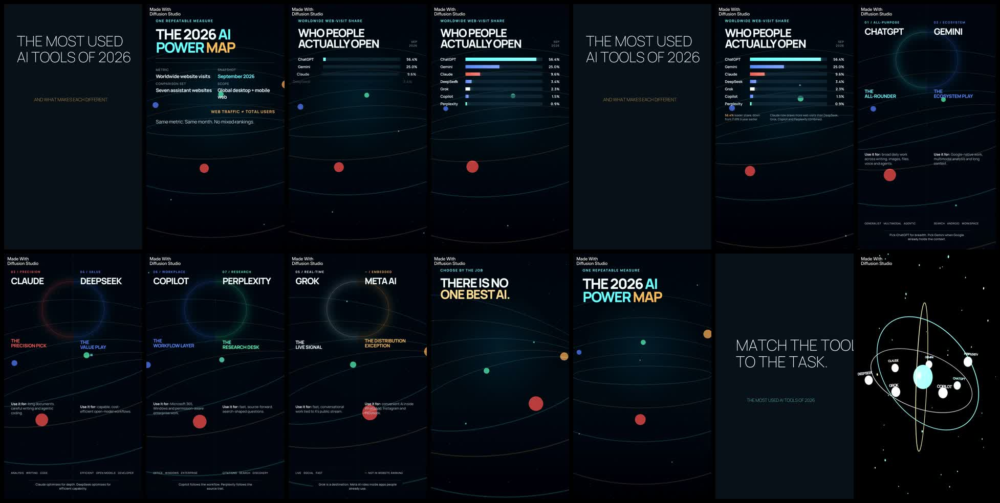

Finished Instagram Reel · 1080×1920 · 30fps
THE MOST USED AI TOOLS OF 2026
And what makes each different. Ranked by one comparable metric: worldwide AI-assistant website-visit share in September 2026.
Compressed preview
Contact sheet

Production evidence
| HyperFrames | 73.8s primary motion render, full check passed |
|---|---|
| Three.js | Deterministic procedural constellation |
| Blender 5.2.2 | Editable scene and 450 rendered 3D frames |
| Diffusion Studio 4.0.3 | Assembly, transitions, effects, audio and WebCodecs master |
| Kokoro | 86.674s timestamped British narration |
Documentation
Usage ranking and claims · Toolchain sources · Engine evaluation · QA report